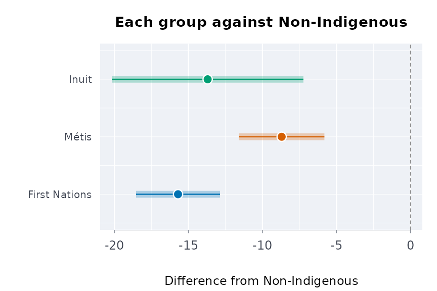
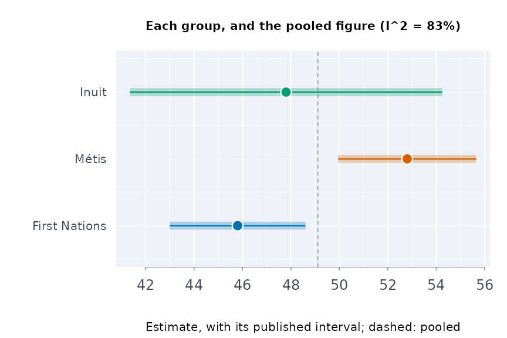
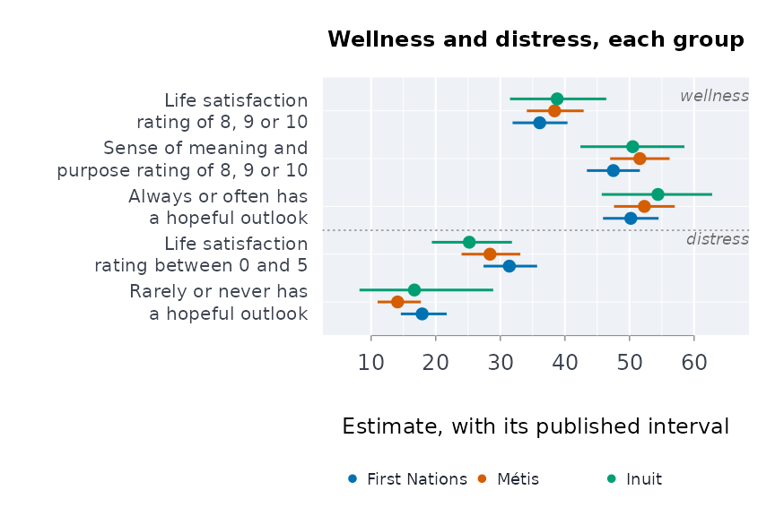
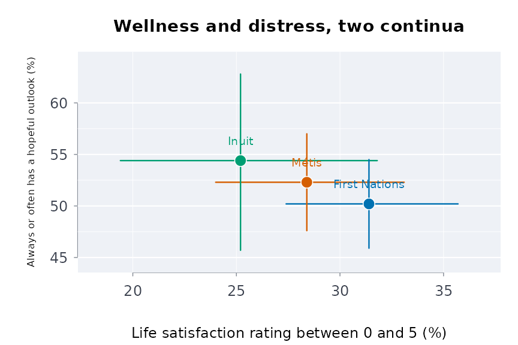
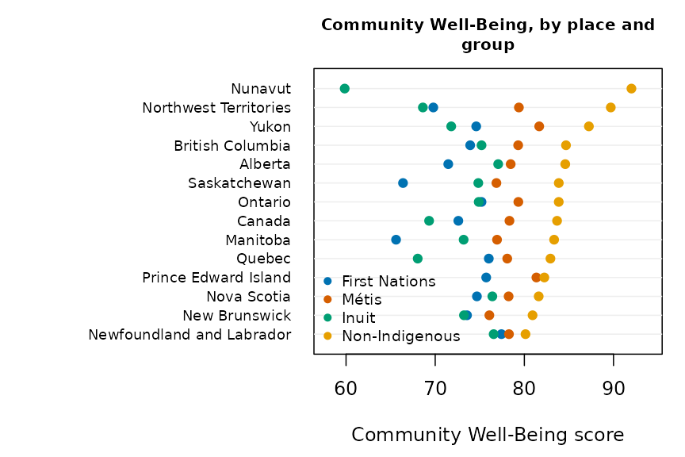
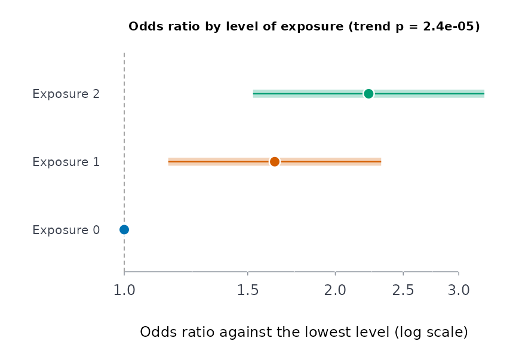
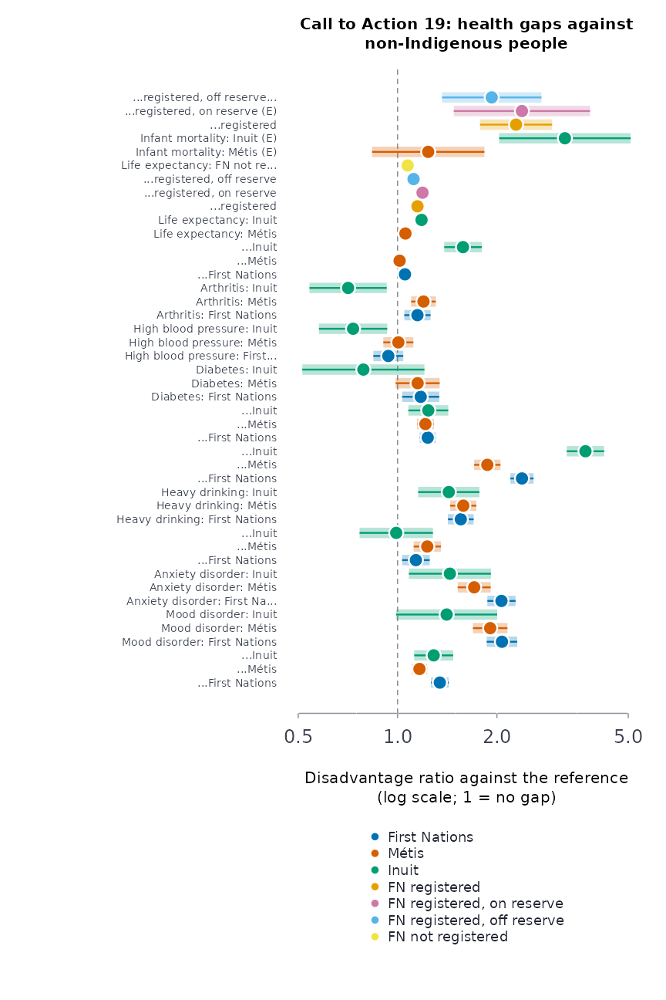
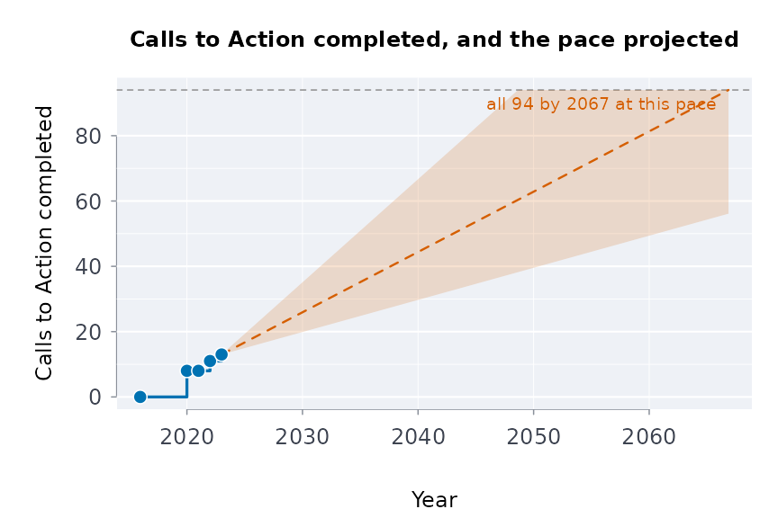
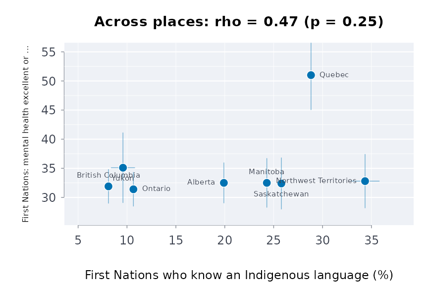

First Nations, Metis and Inuit health: published tables, distinctions and governance
Source:vignettes/first-nations-metis-inuit-health.Rmd
first-nations-metis-inuit-health.RmdThis vignette covers the tools for First Nations, Metis and Inuit health, mental health and wellness data, as Statistics Canada publishes them. It also covers the rules those tools follow, because with these data, how you work matters as much as what you compute.
Every example runs on published values. indiex() bundles
excerpts of eight Statistics Canada tables, reproduced under the
Statistics Canada Open Licence:
| Excerpt | Table | Survey and period |
|---|---|---|
"health" |
13-10-0924-01 | Canadian Community Health Survey, 2015/2018 and 2019/2022 |
"mentalhealth" |
41-10-0067-01 | Indigenous Peoples Survey, 2022 |
"wellbeing" |
41-10-0082-01 | 2024 |
"suiide" |
41-10-0021-01 | Aboriginal Peoples Survey, 2017 |
"lifeexp" |
17-10-0160-01 | Projected life expectancy at birth |
"infmort" |
17-10-0161-01 | Infant mortality |
"censuspop" |
98-510-X2021001 | 2021 Census Indigenous Population Profile, population |
"censushh" |
98-510-X2021016 | 2021 Census Indigenous Population Profile, households |
The 13-10-0924 excerpt is the table behind The Daily of 2025-02-13.
The full tables, and the other Indigenous-titled tables, are at the data
service: see indtabs().
Some of this vignette concerns suicide. If you or someone you know needs support, the Hope for Wellness Help Line (1-855-242-3310, or the online chat at hopeforwellness.ca) offers counselling and crisis support to Indigenous people across Canada, in English and French, and in Cree, Ojibway and Inuktitut on request. You can also call or text 9-8-8.
Whose data these are
Two sets of principles govern Indigenous data in Canada.
- OCAP® comes from the First Nations Information Governance Centre. It stands for Ownership, Control, Access and Possession. It says First Nations own their information and decide how it is collected, used and shared.
- The CARE Principles come from Carroll et al. (2020). They stand for Collective benefit, Authority to control, Responsibility and Ethics, and apply to Indigenous data everywhere.
Walter and Andersen (2013) set out what a quantitative methodology looks like when it starts from Indigenous standpoints. Walter (2016) names the pattern it pushes against: statistics about Indigenous peoples clustered around five Ds, namely disparity, deprivation, disadvantage, dysfunction and difference.
The package follows these principles in six ways.
- Only open aggregate data. The data service mirrors only aggregate tables published under the Statistics Canada Open Licence. It never holds First Nations-held survey data, such as the First Nations Regional Health Survey. Those are reached through the FNIGC, on its terms.
-
Distinctions-based. First Nations, Metis and Inuit
are reported separately. A pooled “Indigenous” total is marked wherever
it appears.
dstntst()shows when pooling would hide a difference. - Off-reserve coverage. The First Nations figures in these surveys are for people living off reserve. Reserves are outside the surveys’ coverage.
-
Suppressed cells stay suppressed. A cell is
suppressed (
x) to protect the people in it, and small communities most of all.Fcells are too unreliable to publish. Both becomeNA, and nothing in the package imputes them or works them back from totals. -
Strengths beside gaps. Wellness is reported beside
distress, and
frmaud()checks how deficit-framed a report is. - A gap is not a deficit of the people. A difference between groups measures the effects of colonial policy, the residential schools and unequal services. Report it with that context, and with the communities’ own interpretation where they have given one.
Reading a table as published
A Statistics Canada table puts each estimate and its limits on
separate rows. scests() puts them side by side. It reads
every layout the Indigenous tables use:
- confidence limits named in any of their forms;
- coefficients of variation, or standard errors, in place of limits;
- several measures per cell;
- tables with no limits at all.
d <- data.frame(REF_DATE = "2022", GEO = "Canada",
`Indigenous identity` = rep(c("First Nations", "Metis"), each = 4),
Statistics = rep(c("Number of persons", "Percent", "Low 95% confidence interval",
"High 95% confidence interval"), 2),
UOM = rep(c("Persons", "Percent", "Percent", "Percent"), 2),
VALUE = c(415000, 47.1, 45.2, 49.0, 320000, 50.3, 48.1, 52.5),
STATUS = "", check.names = FALSE)
scests(d)
#> REF_DATE GEO Indigenous identity measure estimate lower upper
#> 1 2022 Canada First Nations Number of persons 415000.0 NA NA
#> 2 2022 Canada First Nations Percent 47.1 45.2 49.0
#> 3 2022 Canada Metis Number of persons 320000.0 NA NA
#> 4 2022 Canada Metis Percent 50.3 48.1 52.5
#> cisou quality
#> 1 <NA> ok
#> 2 published ok
#> 3 <NA> ok
#> 4 published okA mirrored table loads by its id. This needs the data service key, so it is not run here:
Perceived mental health, against non-Indigenous adults
The share of adults who rate their mental health very good or excellent, 2019/2022, from table 13-10-0924-01:
h <- indiex("health")
mh <- h[h$period == "2019/2022" & h$age == "Total, 18 years and over" &
h$indicator == "Perceived mental health, very good or excellent", ]
g <- indgap(mh, "group", "estimate", "lower", "upper", qual = "quality")
g
#> group estimate refest ratio ratiolo ratioup difference
#> 1 First Nations 45.8 61.5 0.7447154 0.7001926 0.7920694 -15.7
#> 2 Métis 52.8 61.5 0.8585366 0.8130217 0.9065995 -8.7
#> 3 Inuit 47.8 61.5 0.7772358 0.6785276 0.8903034 -13.7
#> diflo difup usewithcau poogrp
#> 1 -18.53593 -12.864070 FALSE FALSE
#> 2 -11.58531 -5.814692 FALSE FALSE
#> 3 -20.16568 -7.234321 FALSE FALSE
plot(g)
Before pooling the three groups into one “Indigenous” figure, test whether they differ:
dt <- dstntst(mh[mh$group != "Non-Indigenous", ], "group", "estimate", "lower", "upper")
dt
#> Distinctions test across 3 groups: Q = 11.97 on 2 df, p = 0.00252, I^2 = 83%
#> Pooled (inverse-variance) 49.11; the groups differ: report each one, not the pooled figure
plot(dt)
The whole scale, not one cut of it
“Very good or excellent” cuts a five-point scale at one place (the
table publishes it in four categories, with fair and poor together).
ordcmp() compares the whole distribution. It gives the
probability that a person in one group rates their mental health higher
than a person in the reference group, with ties counted half (Agresti
1980). The data are from the 2022 Indigenous Peoples Survey, table
41-10-0067-01:
r <- indiex("mentalhealth")
r <- r[r$region == "Canada", ]
oc <- ordcmp(r, "group", "rating", "estimate", "lower", "upper",
lvls = c("Fair or poor", "Good", "Very good", "Excellent"),
ref = "M\u00e9tis", qual = "quality")
oc
#> group reference probbet lower upper delta neff
#> 1 First Nations Métis 0.4653023 0.4531475 0.4774984 -0.0693954 4021.444
#> 2 Inuit Métis 0.5062337 0.4928231 0.5196353 0.0124674 2791.908
#> neffref usewithcau poogrp
#> 1 3884.405 FALSE FALSE
#> 2 3884.405 FALSE FALSE
plot(oc)
Age standardisation
First Nations, Metis and Inuit populations are younger than the
non-Indigenous population, and many outcomes vary steeply with age.
stdprev() standardises survey percentages to one age
structure. Here it is applied to serious thoughts of suicide in the past
year, from the 2017 Aboriginal Peoples Survey (table 41-10-0021-01):
si <- indiex("suicide")
si <- si[si$measure == "Seriously contemplated suicide in the past 12 months" &
si$age != "Total, 15 years and over", ]
si <- si[order(si$group, si$age), ]
sp <- stdprev(si$estimate, si$lower, si$upper, std = c(20, 18, 17, 17, 28),
grp = si$group, qual = si$quality)
sp
#> group estimate lower upper se usewithcau
#> 1 First Nations 5.792 5.141142 6.442858 0.3320767 TRUE
#> 2 Inuit 5.940 5.036123 6.843877 0.4611700 TRUE
#> 3 Métis 4.742 4.125043 5.358957 0.3147799 TRUE
plot(sp)
For counts of events (deaths, hospitalisations),
agestd() gives directly standardised rates with the
Fay-Feuer gamma interval, and rategap() compares two of
them.
Wellness beside distress
Indigenous scholars of mental health describe it as wellness, and as a process of healing, grounded in community, cultural identity, a holistic view and interdependence (Stewart 2008). They ask that strengths be reported together with disparities (Stewart 2020).
The estimators in this section and the next put that into how published tables are analysed. They are our translation, inspired by that work, not methods its authors state, and they say what they cannot show.
welprof() puts wellness indicators first and distress
after them. This example uses the 2024 well-being table,
41-10-0082-01:
wb <- indiex("wellbeing")
w <- welprof(wb, "group", "indicator", "estimate", "lower", "upper",
well = c("Life satisfaction rating of 8, 9 or 10",
"Sense of meaning and purpose rating of 8, 9 or 10",
"Always or often has a hopeful outlook"),
distress = c("Life satisfaction rating between 0 and 5",
"Rarely or never has a hopeful outlook"),
qual = "quality")
plot(w)
frmaud(w)
#> 40% of the indicators reported are deficit-framed.dualcont() places each group on two axes, wellness and
distress. They are related but distinct (Keyes 2002, 2005):
dc <- dualcont(w, "Always or often has a hopeful outlook", "Life satisfaction rating between 0 and 5")
dc
#> group wellness wello welup distress distrlo distrup strratio ratiolo
#> 1 First Nations 50.2 45.9 54.5 31.4 27.4 35.7 1.598726 1.365446
#> 2 Métis 52.3 47.6 57.0 28.4 24.0 33.1 1.841549 1.531631
#> 3 Inuit 54.4 45.7 62.8 25.2 19.4 31.8 2.158730 1.609182
#> ratioup usewithcau
#> 1 1.871862 FALSE
#> 2 2.214178 FALSE
#> 3 2.895953 FALSE
plot(dc)
Holistic balance
Wellness is a balance among the domains of a person; illness is a
loss of that balance (Stewart 2008; Gabriel, Mirza and Stewart 2022). An
average of domains cannot show balance. holbal() measures
it as the ratio of the geometric mean of the domain levels to their
arithmetic mean. That ratio is 1 when every domain is level, and falls
as one domain falls behind the others.
Which indicator stands for each domain is a choice for the people whose data these are to make. The choice below is one reading of it:
dom <- c("Perceived health, very good or excellent" = "physical",
"Perceived mental health, very good or excellent" = "mental",
"Life satisfaction, satisfied or very satisfied" = "emotional",
"Sense of belonging to local community, somewhat strong or very strong" = "community")
d <- h[h$period == "2019/2022" & h$age == "Total, 18 years and over" & h$indicator %in% names(dom), ]
d$domain <- dom[d$indicator]
hb <- holbal(d, "group", "domain", "estimate", "lower", "upper", qual = "quality")
hb
#> group level lvllo lvlup balance ballo balup
#> 1 First Nations 59.525 58.25190 60.79810 0.9641371 0.9582021 0.9696524
#> 2 Métis 63.725 62.43592 65.01408 0.9751839 0.9707913 0.9791662
#> 3 Inuit 63.800 60.74133 66.85867 0.9699605 0.9562503 0.9812743
#> 4 Non-Indigenous 69.800 69.60196 69.99804 0.9846768 0.9842679 0.9850811
#> weadom usewithcau
#> 1 physical FALSE
#> 2 physical FALSE
#> 3 mental FALSE
#> 4 physical FALSE
plot(hb)
A community that weighs the domains differently sets
weights. The result says which weights it used.
The four directions
The First Nations Mental Wellness Continuum Framework (Health Canada
and Assembly of First Nations 2015) describes mental wellness in four
directions: hope, belonging, meaning and purpose. mhcont()
lays out the published proxies for each direction. It says which
directions the tables do not measure, and does not fill them in:
mw <- mhcont(wb, "group", "indicator", "estimate", "lower", "upper",
hope = "Always or often has a hopeful outlook",
meaning = "Sense of meaning and purpose rating of 8, 9 or 10",
purp = "Sense of meaning and purpose rating of 8, 9 or 10", qual = "quality")
mw[, c("group", "indicator", "domain", "estimate", "shared")]
#> group indicator domain
#> 1 First Nations hope Always or often has a hopeful outlook
#> 2 First Nations belonging no published proxy
#> 3 First Nations meaning Sense of meaning and purpose rating of 8, 9 or 10
#> 4 First Nations purpose Sense of meaning and purpose rating of 8, 9 or 10
#> 5 Métis hope Always or often has a hopeful outlook
#> 6 Métis belonging no published proxy
#> 7 Métis meaning Sense of meaning and purpose rating of 8, 9 or 10
#> 8 Métis purpose Sense of meaning and purpose rating of 8, 9 or 10
#> 9 Inuit hope Always or often has a hopeful outlook
#> 10 Inuit belonging no published proxy
#> 11 Inuit meaning Sense of meaning and purpose rating of 8, 9 or 10
#> 12 Inuit purpose Sense of meaning and purpose rating of 8, 9 or 10
#> estimate shared
#> 1 50.2 FALSE
#> 2 NA FALSE
#> 3 47.5 TRUE
#> 4 47.5 TRUE
#> 5 52.3 FALSE
#> 6 NA FALSE
#> 7 51.6 TRUE
#> 8 51.6 TRUE
#> 9 54.4 FALSE
#> 10 NA FALSE
#> 11 50.5 TRUE
#> 12 50.5 TRUE
plot(mw)
Healing as a process
A process shows in change. healchg() gives the change
between survey periods, wellness first. It uses the two periods of table
13-10-0924-01:
hc <- healchg(h[h$age == "Total, 18 years and over", ], "group", "indicator", "period",
"estimate", "lower", "upper", from = "2015/2018", to = "2019/2022",
qual = "quality",
well = c("Perceived mental health, very good or excellent",
"Sense of belonging to local community, somewhat strong or very strong"))
hc <- hc[hc$indicator %in% c("Perceived mental health, very good or excellent",
"Sense of belonging to local community, somewhat strong or very strong",
"Mood disorder", "Anxiety disorder"), ]
plot(hc)
Between the two periods, which span the COVID-19 pandemic, the share rating their mental health very good or excellent fell for First Nations, Metis and non-Indigenous adults. The Inuit interval includes no change. Because the reference group fell too, a group’s change is read against the reference group’s change, not on its own.
Connection across places
The land is “an instrumental part of all aspects of Indigenous life including health and well-being” (Mashford-Pringle and Stewart 2019). Health and education are interconnected (Mashford-Pringle 2016). Across places, connections of this kind leave a trace: do two indicators rise together where people live?
connassoc() measures this with Spearman’s rho. Its
p-value is exact for up to eight places, and a Monte Carlo estimate
beyond. Its band is a sensitivity band, not a confidence interval: it
shows how far the published sampling error alone moves rho for these
places. Here, by region, it asks whether First Nations and Metis
people’s mental health rise together, using table 41-10-0067-01:
r <- indiex("mentalhealth")
r <- r[r$rating == "Excellent or very good" & r$region != "Canada", ]
pair <- merge(r[r$group == "First Nations", ], r[r$group == "M\u00e9tis", ], by = "region",
suffixes = c("fn", "me"))
ca <- connassoc(pair, "region", "estimatefn", "estimateme", "lowerfn", "upperfn",
"lowerme", "upperme")
ca
#> Rank correlation across 11 places: rho = 0.52, permutation p = 0.106; with the published sampling error, 95% interval -0.19 to 0.77
#> An association across places: it does not show that one causes the other for any person.
plot(ca, xlab = "First Nations: excellent or very good (%)",
ylab = "M\u00e9tis: excellent or very good (%)")
This is an association across places. It cannot say that one thing makes a person well.
Community-set weights, and the Community Well-Being index
commidx() combines protective and risk factors with
weights the community sets. It follows the structure of Inuit Tapiriit
Kanatami’s National Inuit Suicide Prevention Strategy (2016). The
function never chooses the weights. A factor the tables do not publish
leaves the index NA; it is not filled in.
h2 <- h[h$period == "2019/2022" & h$age == "Total, 18 years and over", ]
ci <- commidx(h2, "group", "indicator", "estimate", "lower", "upper", qual = "quality",
w = c("Sense of belonging to local community, somewhat strong or very strong" = 2,
"Has a regular healthcare provider" = 1,
"Perceived life stress, most days quite a bit or extremely stressful" = -2,
"Heavy drinking" = -1))
plot(ci)
cwbscr() computes Indigenous Services Canada’s Community
Well-Being index from census profile figures: income, education, housing
and labour force activity. The index measures socio-economic conditions
only. It is not a measure of wellness as First Nations and Inuit define
it.
The 2021 Census
The Indigenous Population Profile of the 2021 Census gives counts for
every geography, by gender, age group and about two thousand
characteristics, with First Nations, Metis, Inuit and non-Indigenous
people in their own columns. In the provincial table, residence on and
off reserve is split out too. cnsprof() reads it with the
hierarchy of the characteristics. profshr() takes a share
with an interval for the 25% long-form sample and the random rounding of
the counts.
Foster children among children under 15, Canada, 2021:
p <- cnsprof(indiex("censuspop"))
fc <- profshr(p, "Foster children", "Total - Children in census families")
fc <- fc[fc$geo == "Canada" & fc$age == "0 to 14 years" &
fc$group %in% c("First Nations", "M\u00e9tis", "Inuit", "Non-Indigenous"), ]
fc[, c("residence", "group", "numerator", "denominator", "estimate", "lower", "upper")]
#> residence group numerator denominator
#> 256 Total - Residence on or off reserve First Nations 11735 265405
#> 257 On reserve First Nations 2350 90270
#> 258 Off reserve First Nations 9385 175135
#> 340 Total - Residence on or off reserve Métis 1975 134670
#> 341 On reserve Métis 15 610
#> 342 Off reserve Métis 1960 134060
#> 424 Total - Residence on or off reserve Inuit 770 21525
#> 425 On reserve Inuit 35 100
#> 426 Off reserve Inuit 735 21425
#> 676 Total - Residence on or off reserve Non-Indigenous 12705 5502310
#> 677 On reserve Non-Indigenous 20 4070
#> 678 Off reserve Non-Indigenous 12690 5498235
#> estimate lower upper
#> 256 4.4215444 4.2880409 4.5590064
#> 257 2.6033012 2.5989608 2.6076487
#> 258 5.3587233 5.1789488 5.5443733
#> 340 1.4665479 1.3593905 1.5820167
#> 341 2.4590164 1.8933392 3.1882099
#> 342 1.4620319 1.3548094 1.5776046
#> 424 3.5772358 3.1713963 4.0328470
#> 425 35.0000000 30.9738945 39.2518422
#> 426 3.4305718 3.0324927 3.8788168
#> 676 0.2309030 0.2240599 0.2379546
#> 677 0.4914005 0.4040293 0.5975523
#> 678 0.2308013 0.2239573 0.2378541
plot(fc[fc$residence == "Total - Residence on or off reserve", ])
The overrepresentation of First Nations, Metis and Inuit children in care is the subject of the first five Calls to Action of the Truth and Reconciliation Commission.
Knowledge of an Indigenous language (all ages):
know <- "Total - Knowledge of Indigenous languages for the population in private households - 25% sample data"
la <- profshr(p, "Indigenous languages", know)
la[la$geo == "Canada" & la$age == "Total - Age groups" & la$residence == "Total - Residence on or off reserve" &
la$group %in% c("First Nations", "M\u00e9tis", "Inuit"), c("group", "estimate", "lower", "upper")]
#> group estimate lower upper
#> 379 First Nations 17.530439 17.40473 17.656859
#> 505 Métis 1.332062 1.28369 1.382232
#> 631 Inuit 58.130139 57.49824 58.759377The census age structure of the Indigenous population is the standard to use when age-standardising First Nations, Metis and Inuit rates (Kumar and Tjepkema 2019):
cnsstd(p)
#> age population weight
#> 1 0 to 4 years 137510 0.07608819
#> 2 5 to 9 years 155565 0.08607853
#> 3 10 to 14 years 166135 0.09192722
#> 4 15 to 19 years 148820 0.08234633
#> 5 20 to 24 years 136070 0.07529140
#> 6 25 to 34 years 263655 0.14588780
#> 7 35 to 44 years 217990 0.12062006
#> 8 45 to 54 years 206360 0.11418485
#> 9 55 to 64 years 202785 0.11220670
#> 10 65 to 74 years 119410 0.06607295
#> 11 75 years and over 52945 0.02929597A Community Well-Being score from the public profile (income,
education, housing, labour force), by distinction. The household table
splits Indigenous from non-Indigenous households only, so First Nations,
Metis and Inuit people share the Indigenous households’ housing
component. ?cnscwb explains where it departs from the
Department’s own index:
h <- cnsprof(indiex("censushh"))
cw <- cnscwb(p, h)
cw[cw$geo %in% c("Canada", "Nunavut"), c("geo", "group", "income", "education", "housing", "labour", "cwb")]
#> geo group income education housing labour cwb
#> 1 Canada First Nations 71.03051 51.62081 91.87864 75.85 72.59499
#> 2 Canada Métis 78.72661 59.55861 91.87864 83.15 78.32846
#> 3 Canada Inuit 72.12712 38.50607 91.87864 74.75 69.31546
#> 4 Canada Non-Indigenous 84.37515 68.01121 95.98845 86.30 83.66870
#> 53 Nunavut First Nations NA NA NA NA NA
#> 54 Nunavut Métis NA NA NA NA NA
#> 55 Nunavut Inuit 70.22000 28.49462 70.82270 69.85 59.84683
#> 56 Nunavut Non-Indigenous 100.00000 79.89287 93.30144 94.85 92.01108
plot(cw)
Intergenerational exposure
Studies of the residential schools ask whether harm passes down families. Among them are Bombay, Matheson and Anisman (2014), Kaspar (2014), Hackett, Feeny and Tompa (2016), and McQuaid et al. (2017).
-
genexpo()codes how many of the two generations before a respondent attended. An unknown generation stays unknown. -
exptrnd()gives the odds ratio at each level, and the Cochran-Armitage test for a trend.
The counts below are made up, to show the computation:
genexpo(parent = c(TRUE, FALSE, TRUE, NA), gparent = c(TRUE, FALSE, FALSE, TRUE))
#> [1] 2 0 1 NA
et <- exptrnd(cases = c(60, 95, 70), n = c(500, 520, 300))
plot(et)
Individual-level data of this kind belong to the communities who collected them. These functions are for analyses done under their authority, or on tables they have published.
The Calls to Action
Call to Action 19 asks for “measurable goals to identify and close
the gaps in health outcomes between Aboriginal and non-Aboriginal
communities”, for indicators that include infant mortality, suicide,
mental health, addictions, life expectancy and chronic diseases.
trcind() lists which published table measures each of them.
trchlthgap() measures every gap against non-Indigenous
people on one scale, the disadvantage ratio: the ratio of the two
estimates, turned so that above 1 means the group fares worse, with its
interval. It is a ratio of published estimates, not a relative risk.
g <- trchlthgap()
g[g$measure %in% c("Life expectancy at birth", "Infant mortality rate"),
c("measure", "period", "group", "estimate", "refest", "disratio", "lower", "upper")]
#> measure period
#> 34 Life expectancy at birth 2016/2021
#> 35 Life expectancy at birth 2016/2021
#> 36 Life expectancy at birth 2016/2021
#> 37 Life expectancy at birth 2016/2021
#> 38 Life expectancy at birth 2016/2021
#> 39 Life expectancy at birth 2016/2021
#> 40 Infant mortality rate 2014/2016
#> 41 Infant mortality rate 2014/2016
#> 42 Infant mortality rate 2014/2016
#> 43 Infant mortality rate 2014/2016
#> 44 Infant mortality rate 2014/2016
#> group estimate refest disratio
#> 34 Métis 80.47 84.99 1.056170
#> 35 Inuit 71.91 84.99 1.181894
#> 36 First Nations (Registered or Treaty) 73.98 84.99 1.148824
#> 37 First Nations (Registered or Treaty), on reserve 71.42 84.99 1.190003
#> 38 First Nations (Registered or Treaty), off reserve 76.04 84.99 1.117701
#> 39 First Nations, without registered status 79.23 84.99 1.072700
#> 40 Métis 5.20 4.20 1.238095
#> 41 Inuit 13.50 4.20 3.214286
#> 42 First Nations (Registered or Treaty) 9.60 4.20 2.285714
#> 43 First Nations (Registered or Treaty), on reserve 10.00 4.20 2.380952
#> 44 First Nations (Registered or Treaty), off reserve 8.10 4.20 1.928571
#> lower upper
#> 34 1.0497867 1.062592
#> 35 1.1636936 1.200379
#> 36 1.1433513 1.154323
#> 37 1.1833943 1.196648
#> 38 1.1078697 1.127620
#> 39 1.0617669 1.083745
#> 40 0.8366176 1.832235
#> 41 2.0315414 5.085613
#> 42 1.7776500 2.938987
#> 43 1.4796282 3.831323
#> 44 1.3632810 2.728262
plot(g)
Life expectancy at birth in 2016/2021 was 71.4 years for First Nations people living on reserve and 71.9 for Inuit, against 85.0 for non-Indigenous people. Infant mortality among Inuit was 13.5 per 1,000 live births in 2014/2016, against 4.2.
How fast the Calls themselves are being completed:
The Truth and Reconciliation Commission made 94 Calls to Action in
2015. trccmpl() holds the number completed each year, as
the Yellowhead Institute counts them (Jewell and Mosby 2021, 2022).
trcprog() takes that pace as a Poisson rate:
p <- trcprog()
p
#> completed remaining years rate ratelo rateup cmplby cmplbyearly
#> 1 13 81 7.04 1.846591 0.9832319 3.157727 2066.865 2048.651
#> cmplbylate
#> 1 2105.381
plot(p)
The projection only extends the pace so far. It is not a forecast.
Cultural continuity
Chandler and Lalonde (1998) found that British Columbia First Nations communities with more markers of cultural continuity had far fewer youth suicides. Hallett, Chandler and Lalonde (2007) found the same for knowledge of an Indigenous language. Their unit was the community. Across provinces and territories, the published tables allow a coarser question: where more First Nations people know an Indigenous language, do more rate their mental health highly?
prof <- cnsprof(indiex("censuspop"))
la <- profshr(prof, "Indigenous languages", know)
la <- la[la$age == "Total - Age groups" & la$group == "First Nations" & la$geo != "Canada" &
la$residence == "Total - Residence on or off reserve", ]
mh2 <- indiex("mentalhealth")
mh2 <- mh2[mh2$rating == "Excellent or very good" & mh2$group == "First Nations", ]
both <- merge(la[c("geo", "estimate", "lower", "upper")], mh2[c("region", "estimate", "lower", "upper")],
by.x = "geo", by.y = "region", suffixes = c("lang", "mh"))
cc <- connassoc(both, "geo", "estimatelang", "estimatemh", "lowerlang", "upperlang",
"lowermh", "uppermh")
cc
#> Rank correlation across 8 places: rho = 0.47, exact p = 0.247; with the published sampling error, 95% interval -0.31 to 0.79
#> An association across places: it does not show that one causes the other for any person.
plot(cc, xlab = "First Nations who know an Indigenous language (%)",
ylab = "First Nations: mental health excellent or very good (%)")
Across these eight provinces and territories, the rank correlation is positive but far from settled: its exact p-value is large and its sensitivity band includes zero. That is not evidence for or against the communities’ findings. Eight places are far too few, a province mixes many communities, and the two measures come from different surveys and years. The community-level design needs the census profile of each First Nations community (98-510-X2021002 at the data service), and outcomes measured for the same communities.
Your own data
Nothing here is tied to Canada or to these tables. Each estimator
takes a data frame with a group column, an estimate and its limits. A
table from another agency needs two steps first: limits from whatever it
publishes in their place (limfrom() takes a standard error,
a coefficient of variation or a margin of error), and its quality flags
mapped onto suppressed and use-with-caution (qltyrcd()).
Here, made-up numbers in an Australian layout, with relative standard
errors and that agency’s flags:
own <- data.frame(group = c("Aboriginal", "Torres Strait Islander", "Non-Indigenous Australians"),
pct = c(31.2, 27.5, 18.9), rse = c(4.1, 22.0, 1.2), flag = c("", "*", ""))
own <- cbind(own, limfrom(own$pct, cv = own$rse)[c("lower", "upper")])
own$quality <- qltyrcd(own$flag, suppr = "**", caution = "*")
indgap(own, "group", "pct", "lower", "upper", ref = "Non-Indigenous Australians",
qual = "quality")
#> group estimate refest ratio ratiolo ratioup difference
#> 1 Aboriginal 31.2 18.9 1.650794 1.5179467 1.795267 12.3
#> 2 Torres Strait Islander 27.5 18.9 1.455026 0.9167364 2.309390 8.6
#> diflo difup usewithcau poogrp
#> 1 9.753713 14.84629 FALSE FALSE
#> 2 -3.266111 20.46611 TRUE FALSEName the groups as the peoples concerned name themselves, and give
pooled any row that pools several of them, so it is never
set beside its own parts.
What the package does not compute
Some instruments are individual questionnaires, and aggregate tables cannot reproduce them:
- the Native Wellness Assessment (Fiedeldey-Van Dijk et al. 2017);
- the Cultural Connectedness Scale (Snowshoe et al. 2015);
- the Historical Loss Scale (Whitbeck et al. 2004).
Two-Eyed Seeing (Bartlett, Marshall and Marshall 2012) is a way of
bringing knowledges together, not a formula. The package follows it by
reporting results beside one another without merging them into one index
(dualcont(), welprof()).
Acknowledgements
The estimators for holistic balance, wellness beside distress, the four directions, healing as a process and connection across places put to quantitative use the frameworks of Professor Suzanne Stewart (Yellowknives Dene First Nation), Director of the Waakebiness-Bryce Institute for Indigenous Health at the University of Toronto’s Dalla Lana School of Public Health, and Professor Angela Mashford-Pringle (Timiskaming First Nation), its Associate Director. This work stands on theirs. Any error in turning their qualitative work into estimators is the package’s, not theirs.
References
- Agresti A (1980). Generalized odds ratios for ordinal data. Biometrics 36(1):59-67.
- Bartlett C, Marshall M, Marshall A (2012). Two-Eyed Seeing and other lessons learned within a co-learning journey of bringing together indigenous and mainstream knowledges and ways of knowing. Journal of Environmental Studies and Sciences 2(4):331-340.
- Bombay A, Matheson K, Anisman H (2014). The intergenerational effects of Indian Residential Schools: implications for the concept of historical trauma. Transcultural Psychiatry 51(3):320-338.
- Chandler MJ, Lalonde C (1998). Cultural continuity as a hedge against suicide in Canada’s First Nations. Transcultural Psychiatry 35(2):191-219.
- Carroll SR, Garba I, Figueroa-Rodriguez OL, et al. (2020). The CARE Principles for Indigenous Data Governance. Data Science Journal 19:43.
- Fiedeldey-Van Dijk C, Rowan M, Dell C, et al. (2017). Honoring Indigenous culture-as-intervention: development and validity of the Native Wellness Assessment. Journal of Ethnicity in Substance Abuse 16(2):181-218.
- Gabriel MD, Mirza S, Stewart SL (2022). Exploring mental health and holistic healing through the life stories of Indigenous youth who have experienced homelessness. International Journal of Environmental Research and Public Health 19(20):13402.
- Hackett C, Feeny D, Tompa E (2016). Canada’s residential school system: measuring the intergenerational impact of familial attendance on health and mental health outcomes. Journal of Epidemiology and Community Health 70(11):1096-1105.
- Hallett D, Chandler MJ, Lalonde CE (2007). Aboriginal language knowledge and youth suicide. Cognitive Development 22(3):392-399.
- Health Canada, Assembly of First Nations (2015). First Nations Mental Wellness Continuum Framework.
- Inuit Tapiriit Kanatami (2016). National Inuit Suicide Prevention Strategy.
- Jewell E, Mosby I (2021, 2022). Calls to Action Accountability. Yellowhead Institute.
- Kaspar V (2014). The lifetime effect of residential school attendance on Indigenous health status. American Journal of Public Health 104(11):2184-2190.
- Keyes CLM (2002). The mental health continuum: from languishing to flourishing in life. Journal of Health and Social Behavior 43(2):207-222.
- Keyes CLM (2005). Mental illness and/or mental health? Investigating axioms of the complete state model of health. Journal of Consulting and Clinical Psychology 73(3):539-548.
- Mashford-Pringle A (2016). Aboriginal health and Aboriginal education are interconnected. Research in the Sociology of Health Care 34:85-96.
- Mashford-Pringle A, Stewart SL (2019). Akiikaa (it is the land): exploring land-based experiences with university students in Ontario. Global Health Promotion 26(3 suppl):64-72.
- McQuaid RJ, Bombay A, McInnis OA, et al. (2017). Suicide ideation and attempts among First Nations peoples living on-reserve in Canada: the intergenerational and cumulative effects of Indian Residential Schools. Canadian Journal of Psychiatry 62(6):422-430.
- Snowshoe A, Crooks CV, Tremblay PF, Craig WM, Hinson RE (2015). Development of a Cultural Connectedness Scale for First Nations youth. Psychological Assessment 27(1):249-259.
- Stewart SL (2008). Promoting Indigenous mental health: cultural perspectives on healing from Native counsellors in Canada. International Journal of Health Promotion and Education 46(2):49-56.
- Stewart S (2020). Addressing strengths and disparities in Indigenous health. International Journal of Indigenous Health 15(1):4.
- Walter M (2016). Data politics and Indigenous representation in Australian statistics. In Kukutai T, Taylor J (eds), Indigenous Data Sovereignty: Toward an Agenda, 79-97. ANU Press.
- Walter M, Andersen C (2013). Indigenous Statistics: A Quantitative Research Methodology. Left Coast Press.
- Whitbeck LB, Adams GW, Hoyt DR, Chen X (2004). Conceptualizing and measuring historical trauma among American Indian people. American Journal of Community Psychology 33(3-4):119-130.